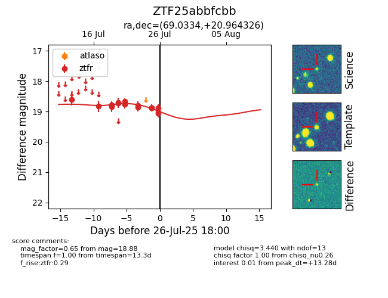

Target ZTF25abbfcbb at 2025-07-26 18:00, see:
FINK: fink-portal.org/ZTF25abbfcbb
Lasair: lasair-ztf.lsst.ac.uk/objects/ZTF25abbfcbb
ALeRCE: alerce.online/object/ZTF25abbfcbb
alt names
ZTF25abbfcbb (ztf,fink)
coordinates:
equatorial (ra, dec) = (69.0334,+20.96433)
galactic (l, b) = (177.3279,-17.42709)
photometry
last ztfr=18.88
18 ztfr detections
